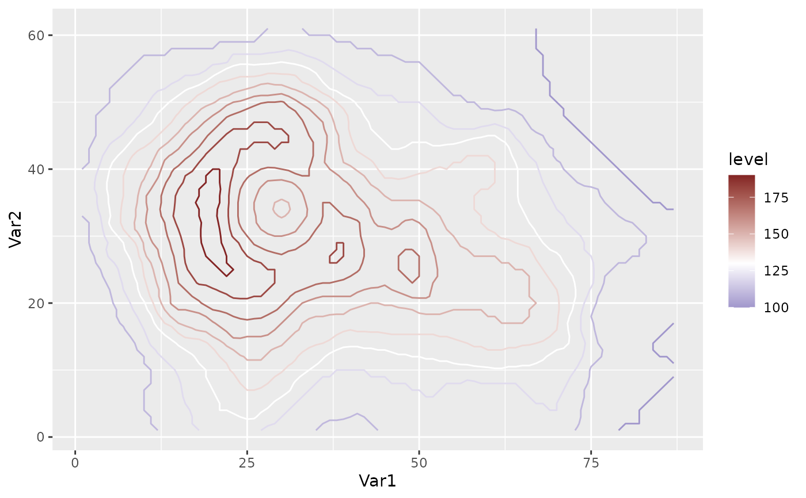

Wrapper around ggplot's scale_colour_gradient2 with
inverted defaults of high and low.
scale_colour_divergent(
...,
low = scales::muted("blue"),
mid = "white",
high = scales::muted("red"),
midpoint = 0,
space = "Lab",
na.value = "grey50",
guide = "colourbar"
)
scale_color_divergent(
...,
low = scales::muted("blue"),
mid = "white",
high = scales::muted("red"),
midpoint = 0,
space = "Lab",
na.value = "grey50",
guide = "colourbar"
)
scale_fill_divergent(
...,
low = scales::muted("blue"),
mid = "white",
high = scales::muted("red"),
midpoint = 0,
space = "Lab",
na.value = "grey50",
guide = "colourbar"
)Arguments
- ...
Arguments passed on to
continuous_scalescale_name![[Deprecated]](figures/lifecycle-deprecated.svg) The name of the scale
that should be used for error messages associated with this scale.
The name of the scale
that should be used for error messages associated with this scale.paletteA palette function that when called with a numeric vector with values between 0 and 1 returns the corresponding output values (e.g.,
scales::pal_area()).breaksOne of:
NULLfor no breakswaiver()for the default breaks computed by the transformation objectA numeric vector of positions
A function that takes the limits as input and returns breaks as output (e.g., a function returned by
scales::extended_breaks()). Note that for position scales, limits are provided after scale expansion. Also accepts rlang lambda function notation.
minor_breaksOne of:
NULLfor no minor breakswaiver()for the default breaks (one minor break between each major break)A numeric vector of positions
A function that given the limits returns a vector of minor breaks. Also accepts rlang lambda function notation. When the function has two arguments, it will be given the limits and major breaks.
n.breaksAn integer guiding the number of major breaks. The algorithm may choose a slightly different number to ensure nice break labels. Will only have an effect if
breaks = waiver(). UseNULLto use the default number of breaks given by the transformation.labelsOne of:
NULLfor no labelswaiver()for the default labels computed by the transformation objectA character vector giving labels (must be same length as
breaks)An expression vector (must be the same length as breaks). See ?plotmath for details.
A function that takes the breaks as input and returns labels as output. Also accepts rlang lambda function notation.
limitsOne of:
NULLto use the default scale rangeA numeric vector of length two providing limits of the scale. Use
NAto refer to the existing minimum or maximumA function that accepts the existing (automatic) limits and returns new limits. Also accepts rlang lambda function notation. Note that setting limits on positional scales will remove data outside of the limits. If the purpose is to zoom, use the limit argument in the coordinate system (see
coord_cartesian()).
rescalerA function used to scale the input values to the range [0, 1]. This is always
scales::rescale(), except for diverging and n colour gradients (i.e.,scale_colour_gradient2(),scale_colour_gradientn()). Therescaleris ignored by position scales, which always usescales::rescale(). Also accepts rlang lambda function notation.oobOne of:
Function that handles limits outside of the scale limits (out of bounds). Also accepts rlang lambda function notation.
The default (
scales::censor()) replaces out of bounds values withNA.scales::squish()for squishing out of bounds values into range.scales::squish_infinite()for squishing infinite values into range.
trans- Deprecated in favour of
transform. callThe
callused to construct the scale for reporting messages.superThe super class to use for the constructed scale
- low, high
Colours for low and high ends of the gradient.
- mid
colour for mid point
- midpoint
The midpoint (in data value) of the diverging scale. Defaults to 0.
- space
colour space in which to calculate gradient. Must be "Lab" - other values are deprecated.
- na.value
Colour to use for missing values
- guide
Type of legend. Use
"colourbar"for continuous colour bar, or"legend"for discrete colour legend.
See also
Other ggplot2 helpers:
MakeBreaks(),
WrapCircular(),
geom_arrow(),
geom_contour2(),
geom_contour_fill(),
geom_label_contour(),
geom_relief(),
geom_streamline(),
guide_colourstrip(),
map_labels,
reverselog_trans(),
scale_longitude,
stat_na(),
stat_subset()
Examples
library(ggplot2)
ggplot(reshape2::melt(volcano), aes(Var1, Var2, z = value)) +
geom_contour(aes(color = after_stat(level))) +
scale_colour_divergent(midpoint = 130)
